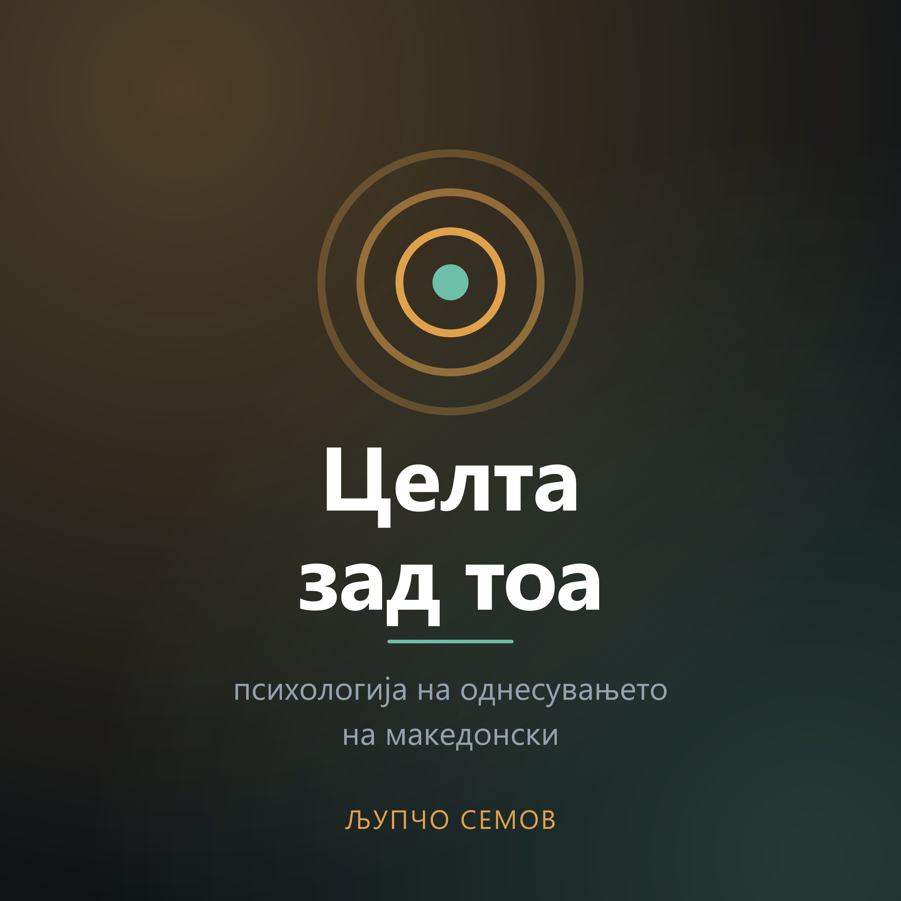

Психологија на однесувањето, на македонски.
Секое однесување служи некому за нешто — и тоа речиси никогаш не е она што го кажуваме гласно. Во секоја епизода земаме една навика, една одлука или еден симптом, и бараме што всушност работи за нас.
Соба полна луѓе кажува убави работи за еден човек — а ниту еден од тие зборови никогаш не му бил кажан нему. Од таа сцена, по три траги: јапонскиот обичај сеизенсо, каде што човекот седи во собата и слуша; студијата на Мартин Селигман од 2005 година, во која „посетата на благодарност“ дава најголем скок на среќата од сите вежби — и потоа бледее; и реминисценцијата кај постари луѓе. Заклучокот не е дека не вреди, туку дека благодарноста не е настан, туку ритам. Накрај: зошто гласот е единственото што не може да се направи подоцна.
Човек излегува од состанок „на цигара“ и никој не го прашува ништо. Тргнувајќи од таа сцена: Алфред Адлер, виенскиот лекар што ја свртел психологијата од причина кон цел, и зошто броењето денови без цигара најчесто пука околу третата недела. Осумте цели на една цигара, приватната логика зад неа, зошто срамот е гориво за рецидив — и што вели Адлер дека е лекот.